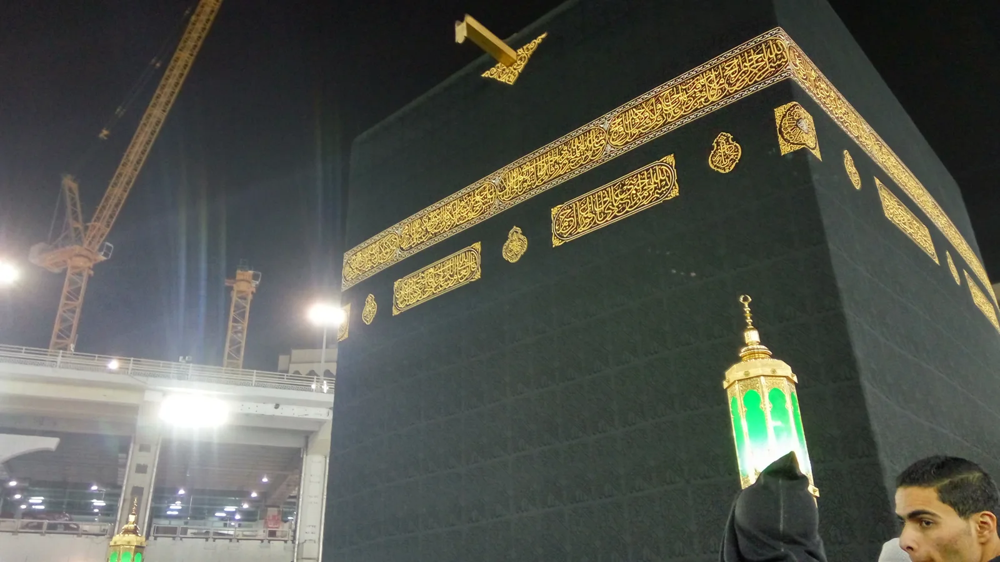
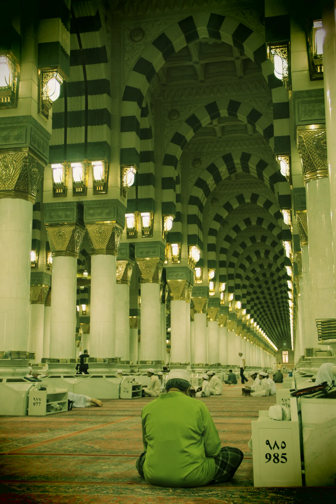

Accueil › Blog › La Mecque et Médine : les deux lieux saints de l'islam
Histoire · 6 min de lecture · 2026-02-02
La Mecque et Médine : les deux lieux saints de l'islam
Deux villes, deux sanctuaires, un même point de départ : c'est à La Mecque et à Médine que l'islam prend racine au VIIe siècle. Quatorze siècles plus tard, la Masjid al-Haram et la Masjid an-Nabawi sont devenues les deux plus vastes lieux de culte de la planète, sans jamais cesser de s'agrandir.



La Mosquée sacrée, autour de la Kaaba
La Masjid al-Haram entoure la Kaaba, l'édifice cubique vers lequel se tournent les musulmans du monde entier pour la prière. Simple enceinte à ciel ouvert aux premiers temps de l'islam, elle n'a cessé de croître : les califes omeyyades et abbassides lui donnent ses premières galeries à arcades, les Ottomans ses coupoles de pierre, avant que les extensions saoudiennes du XXe et du XXIe siècle n'en fassent le plus vaste sanctuaire du monde. La Pierre noire enchâssée dans l'angle de la Kaaba serait, selon la tradition, tombée du ciel à l'époque d'Adam ; le puits de Zamzam, situé dans l'enceinte, alimente les pèlerins en eau depuis des siècles.
Un chantier permanent, à l'échelle du pèlerinage
Le sanctuaire actuel couvre plusieurs dizaines d'hectares sur plusieurs niveaux, irrigué par un réseau de tunnels, d'esplanades et de minarets dépassant 100 mètres. Chaque année, il accueille le hajj, l'un des plus grands rassemblements humains au monde, ce qui en fait autant une prouesse logistique qu'un chef-d'œuvre spirituel. La tour de l'horloge voisine, l'Abraj Al Bait, porte l'un des plus grands cadrans d'horloge du monde, visible à des kilomètres.
La mosquée du Prophète, fondée en 622
À 340 kilomètres de là, la Masjid an-Nabawi de Médine a été fondée par le Prophète Muhammad lui-même en 622, année de l'Hégire. Comme à La Mecque, l'édifice n'a cessé de s'agrandir au fil des dynasties, jusqu'à devenir aujourd'hui l'un des plus grands lieux de culte du monde, reconnaissable à son célèbre Dôme vert qui surmonte la tombe du Prophète.
Une avance technologique inattendue
La mosquée fut l'un des tout premiers lieux du monde arabe à être éclairé à l'électricité, dès la fin du XIXe siècle. Aujourd'hui, ses 250 parasols géants, déployés automatiquement, climatisent des dizaines de milliers de mètres carrés d'esplanade. Le mihrab d'origine du Prophète et la Rawda, « jardin du Paradis », attirent une file continue de visiteurs jour et nuit.
À découvrir
Mosquées citées dans cet article

Masjid al-Haram
La mosquée sacrée qui entoure la Kaaba, cœur spirituel de l'islam et plus grand sanctuaire du monde.
Masjid an-Nabawi
La Mosquée du Prophète à Médine, reconnaissable à son célèbre Dôme vert et à ses parasols géants.
À propos du contenu de cette page : ce site propose un contenu éditorial et culturel rédigé avec soin et le souci du respect des traditions religieuses concernées ; il ne constitue pas un avis théologique ou une source d'autorité religieuse. Malgré nos vérifications, des erreurs, imprécisions ou approximations peuvent subsister. Si vous en repérez une, merci de nous la signaler via la page Contact ou par e-mail à qibla.mosk@gmail.com, nous la corrigerons avec gratitude.